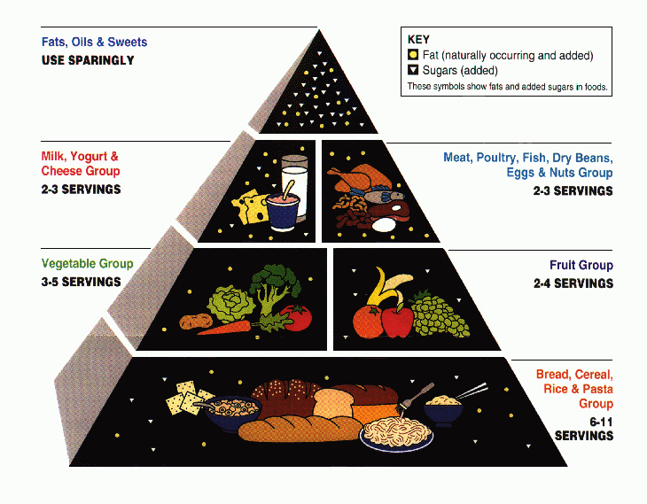

What is Nutrition Pyramid?

A nutrition pyramid is a representation of the optimal number of servings to be eaten each day from each of the basic food groups. It is suggested by USDA to make sure that we consider what food groups one should consume on a daily basis to remain healthy.
Some Facts About Nutrition
- In the United States, 30.9% of adults are overweight
- There is no one perfect diet for everyone.
- We do not need to eat every 2-3 hours.
- Low fat diet does not always mean a healthy diet.
- Sugary Drinks Are the most fattening product in the modern diet.
- Apples are more effective at waking you up in the morning than coffee.
- Salmon is one of the most nutritious foods in the world.
- Diet coke actually is not better than regular coke.
BMI
BMI stands for Body Mass Index. BMI is a measure of your weight relative to your height. A BMI of less than 18.5 means that you are underweight. A BMI of between 18.5 and 24.9 is ideal. A BMI of between 25 and 29.9 means you are overweight, and a BMI over 30 indicates obesity. The formula for BMI is weight in kilograms divided by height in meters squared.